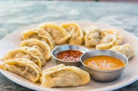

Momo Recipes

Description
Momo is a popular South Asian dumpling that originated in Tibet and has since become a beloved dish across Nepal, Bhutan, and parts of India. These bite-sized delights are made by filling thinly rolled dough with a variety of savory ingredients, often including finely minced meat, vegetables, or a combination of both. The fillings are seasoned with aromatic spices, garlic, ginger, and herbs, which give momos their distinctive, flavorful taste.
Momos can be steamed, fried, or boiled, depending on regional preferences and the desired texture. Steamed momos are the most common, offering a soft and tender bite, while fried momos have a crispy outer layer that contrasts beautifully with the juicy filling inside. They are typically served with a spicy dipping sauce known as "achar," made from tomatoes, chili peppers, and other seasonings. Whether enjoyed as a snack, appetizer, or main course, momos are a versatile and satisfying dish that reflects the rich culinary heritage of the Himalayan region.
Ingredients
- Ground meat (chicken, pork, beef, or lamb)
- Onion, finely chopped
- Garlic, minced
- Ginger, minced
- Green onions or scallions, finely chopped
- Cilantro, chopped (optional)
- Soy sauce
- Ground spices (such as cumin, coriander, turmeric)
- Salt
- Black pepper or chili powder (for heat)
- Oil (for moisture)
Steps
- Prepare the Dough: In a large bowl, combine 2 cups of all-purpose flour with a pinch of salt. Gradually add water while mixing until a firm, elastic dough forms. Knead the dough on a lightly floured surface for about 5-7 minutes until smooth. Cover the dough with a damp cloth and let it rest for 30 minutes.
- Prepare the Filling: In a separate bowl, combine 1 pound (approximately 450g) of ground meat (chicken, pork, beef, or lamb) with finely chopped onions, garlic, ginger, green onions, and cilantro (optional). Add 1-2 tablespoons of soy sauce, 1 teaspoon each of ground cumin and ground coriander, salt to taste, and a pinch of black pepper or chili powder. Drizzle 1-2 tablespoons of oil over the mixture and mix thoroughly.
- Assemble the Momos: Divide the dough into small balls and roll each into a thin, circular wrapper, about 3-4 inches in diameter. Place about 1 tablespoon of the meat filling in the center of each wrapper. Fold the wrapper in half and pinch the edges together to seal, creating pleats or a simple half-moon shape.
- Cook the Momos: Lightly grease a steamer basket and arrange the momos so they do not touch each other. Steam the momos over boiling water for about 10-12 minutes, or until the dough becomes translucent and the meat is cooked through. For a crispy texture, you can also pan-fry the steamed momos in a small amount of oil until the bottoms are golden and crispy.
- Serve: Serve the momos hot with a spicy tomato-based dipping sauce (achar) or soy sauce on the side.